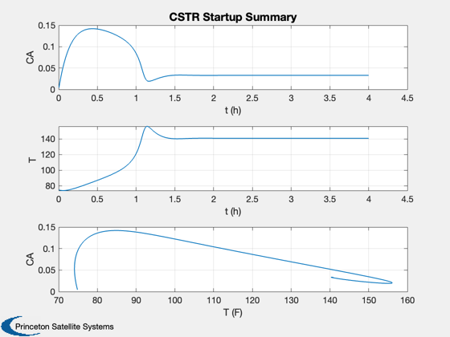
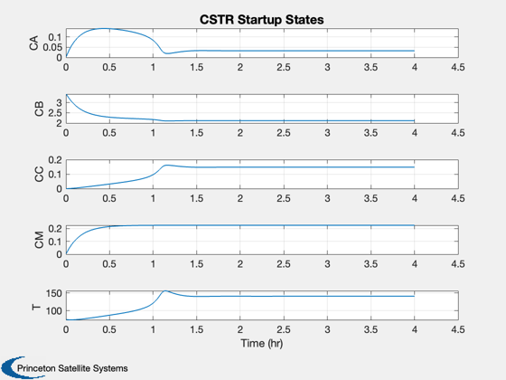

Continuous Stirred Tank Rector Startup Simulation
Simulates CSTR startup with an irreversible first order reaction. Goal is to produce propylene glycol (C).
------------------------------------------------------------------------- Reference: Fogler, H. S. (1999.) Elements of Chemical Reaction Engineering. pp. 554-557; ------------------------------------------------------------------------- See also: RHSFermenter, MuFermenter, TimeGUI, Plot2D -------------------------------------------------------------------------
Contents
%-------------------------------------------------------------------------- % Copyright (c) 2013 Princeton Satellite Systems, Inc. % All rights reserved. %-------------------------------------------------------------------------- % Since version 1. %--------------------------------------------------------------------------
Model parameters
-----------------
fA0 = 80; % Flow lb-mol/h fB0 = 1000; % Flow lb-mol/h fM0 = 100; % Flow lb-mol/h rhoA0 = 0.923; % Density lb-mol/ft^3 rhoB0 = 3.45; % Density lb-mol/ft^3 rhoM0 = 1.54; % Density lb-mol/ft^3 clear d; d.v0 = (fA0/rhoA0 + fB0/rhoB0 + fM0/rhoM0); % ft^3/h d.hR = -36000; % Heat of reaction (But/lb-mol A) d.v = (1/7)*500; % Tank volume ft^3 d.cA0 = fA0/d.v0; % Concentration of propylene oxide (lb-mol/ft^3) d.cB0 = fB0/d.v0; % Concentration of water (lb-mol/ft^3) d.cM0 = fM0/d.v0; % Concentration of methanol (lb-mol/ft^3) d.cPA = 35; % Spec heat at constant pressure Btu/(lb-mol-deg F) d.cPB = 18; % Spec heat at constant pressure Btu/(lb-mol-deg F) d.cPC = 46; % Spec heat at constant pressure Btu/(lb-mol-deg F) d.cPM = 19.5; % Spec heat at constant pressure Btu/(lb-mol-deg F) d.tA1 = 60; % Temperature at water inlet deg-F d.fA0 = fA0; % Flow lb-mol/h d.T0 = 75; % Initial temperature deg-F d.uA = 16000; % Heat exchanger coefficient Btu/h deg-F d.u = 1000; % Water flow (control) lb mol/h d.thetaCP = d.cPA + (d.cPB*fB0 + d.cPM*fM0)/fA0; % Btu/(lb-mol-deg F)
State
[cA (lb-mol/ft^3); cB (lb-mol/ft^3); cC (lb-mol/ft^3); cM (lb-mol/ft^3); T (deg-F)] ------------------
x = [0;3.45;0;0;75]; t = 0;
Number of sim steps
--------------------
nSim = 1000; tEnd = 4; dT = tEnd/nSim; tEnd = nSim*dT;
Plotting arrays
----------------
tPlot = zeros(1,nSim); xPlot = zeros(5,nSim);
Run the simulation
See RHSCSTRStartup.m which models the startup of a CSTR. --------------------------------------------------------
for k = 1:nSim x = RK4( 'RHSCSTRStartup', x, dT, t, d ); t = t + dT; tPlot(k) = t; xPlot(:,k) = x; end
Plot results
-------------
xL = ['t (h)';'t (h)';'T (F)']; Plot2D( [tPlot;tPlot;xPlot(5,:)], xPlot( [1 5 1],:),xL,['CA';'T ';'CA'],... 'CSTR Startup Summary') Plot2D( tPlot, xPlot,'Time (hr)',['CA';'CB';'CC';'CM';'T '],... 'CSTR Startup States') %-------------------------------------- % $Date$ % $Id: 50ca84d1b7bef782c3dafc5d943b6d426676e55f $ 